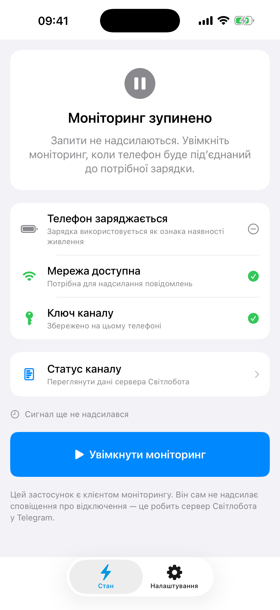

Світлобот
Застосунок повідомляє сервер Світлобота. Сервер визначає зміну стану та публікує повідомлення у Telegram-каналі.
Налаштувати режимiPhone та iPad · iOS 14+
СвітлоБот використовує стан заряджання пристрою як приблизний сигнал про наявність електроенергії й передає його вибраній системі сповіщень.
Застосунок не вимірює електромережу й не призначений для критичних або аварійних сповіщень.

Два окремі режими
Застосунок повідомляє сервер Світлобота. Сервер визначає зміну стану та публікує повідомлення у Telegram-каналі.
Налаштувати режимЗастосунок сам надсилає повідомлення у ваш Telegram-канал через бота, якого ви налаштували. Цей режим замінює режим Світлобота.
Налаштувати режимЗрозумілий стан
Переглядайте зміну заряджання, сигнали серверу й стан доставки Telegram-повідомлень. Якщо fallback-повідомлення не вдалося надіслати через відсутність мережі, застосунок поставить його в чергу для повторної спроби.
Як читати журнал подій
Важливо знати
iOS обмежує регулярну фонову роботу. Для сигналів приблизно раз на хвилину залишайте застосунок відкритим, а пристрій — під’єднаним до зарядного пристрою та інтернету.